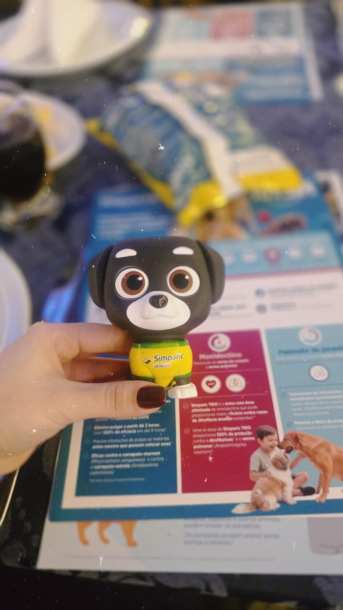

Que as pessoas reconhecessem o meu trabalho pelo meu nome. Primeiro vieram as carteirinhas de vacina…

E, por último, o certificado.
Mas quem segurou firme na hora da picada também merece um.
Geladeira, gaveta, mural? Me manda foto.